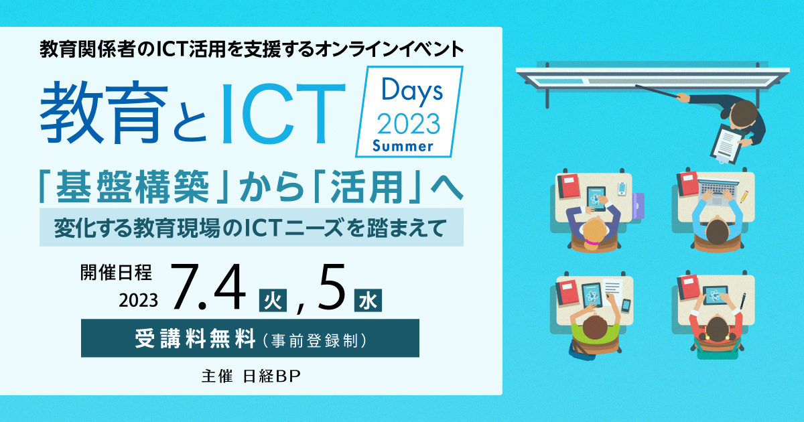

お申し込み受付を
終了しました
プログラミング教育から教育DX、
生成AIの活用まで教育ICTの最前線に迫る。
国の「GIGAスクール構想」により、小中学校での1人1台の学習端末や教育現場のネットワーク環境の整備が進み、大学、高等専門学校、高等学校などでも、ICTを生かした学びが着実に広がっています。それに伴い、教育現場のニーズも、学習データの活用、教職員の働き方改革や父兄・学生との情報共有といった教育DXなど「活用」のフェーズに移りつつあります。
教育機関による活用度合いの格差など様々な課題も見えてきた一方で、最近では生成AIといった新たなテクノロジー活用に対する関心も高まっています。
そうした状況を踏まえ、日経BPでは7月に教育関係者のためのオンラインイベント「教育とICT Days」を開催いたします。教育の情報化のキーパーソンをお招きして、ICT活用教育や教育現場のDXの最新事情と推進のポイントについて講演いただきます。
是非ご参加ください。
本セミナーはオンラインセミナー（Live配信）です。
開催概要
- 名称
- 教育とICT Days 2023 Summer
- 日程
-
Day1：2023年7月4日（火） 17:00～18:50（予定）
Day2：2023年7月5日（水） 17:00～18:45（予定）
- 開催形式
- V-CUBEを使ったオンラインセミナー
- 主催
- 日経BP
- 協力
- 日本教育情報化振興会、テレビ大阪エクスプロ
- 協賛
- コンカー、NTTネクシア（ABC順）
- 参加料
-
無料／事前登録制（先着順）
- 受講対象
- 教育関係者
■視聴環境事前ご確認のお願い
- » オンラインセミナー視聴マニュアル（PDF）はこちら
- Webセミナー【ライブ配信】ご参加にあたり、「視聴環境チェックサイト」での動作確認をお願いしております。音声および動画が正常に受信できるかを、下記「視聴環境チェックサイト」へアクセスしていただきご確認ください。
なお、お客様がご使用のパソコンおよび通信環境によってはWebセミナー【ライブ配信】にご参加いただけない場合がございますので、あらかじめご了承ください。
▼視聴環境チェックサイト（PC・スマートフォン）
- https://ondemand.seminar.vcube.com/checker/videostream
- ※チェックサイトで視聴に問題がある場合は、まずセミナーの推奨環境に合っているかをご確認ください。
▼セミナー推奨環境(ビデオストリーミング配信の「受講者」の項目をご確認ください)
-
※受講者側で推奨しているPCブラウザ・OSは、以下となります。
Windowsプラウザ・・・Microsoft Edge、Mozilla Firefox、GoogleChrome
Macブラウザ・・・safari
WindowsOS：Windows 11、Windows 10、Windows 8.1
MacOS：macOS 最新版
-
※受講者側で推奨しているスマートフォン・タブレットのブラウザ・OSは、以下となります。
iOS ・・・iOS デバイスiOS 10以上、Safari
Android・・・ Android 6以上、Chrome - ※インターネット環境によっては視聴が出来ない場合がありますので、視聴確認サイトから、受講される環境にてテストをお願いします。
お問い合わせ
日経BP読者サービスセンターセミナー係
お問い合わせお申し込み受付を
終了しました